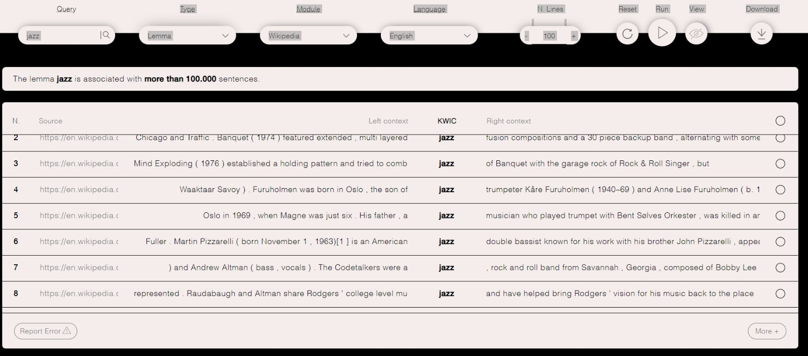
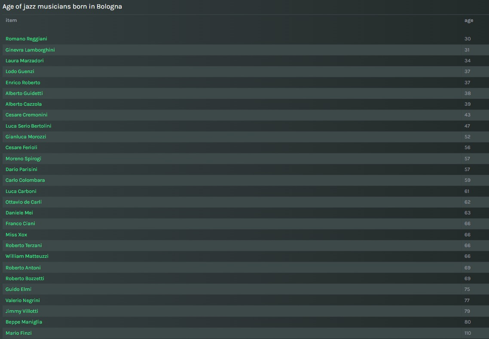
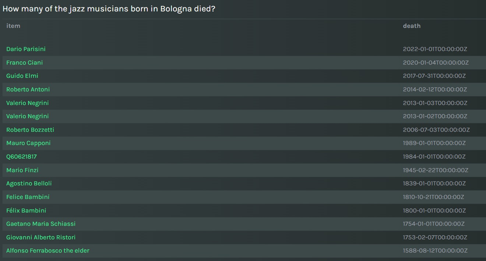

The methodology we employed was to center our research on the data by having a previous hypothesis in mind. This helped us to create questions supported by data and expecting possible answers. Our first step to create the Melody story was to find the theme for it. First of all, we started querying some words related to music in the Polifonia Corpus. Due to the amount of results, we decided to narrow the field of investigation focusing on the jazz genre, towards which we are both keen on. We queried the jazz as a lemma in the Wikipedia module and by running it we had these results.
After discovering that jazz appears in many contexts, we wanted to find something related to the city we are living in. Therefore, thinking about the music history of Bologna, we realized that many famous singers were born here, such as Lucio Dalla. As a result, searching on Google we found a lot of information about him and other jazz musicians born in Bologna. For this reason, we chose it as the central point of our story. The second step was to create a query to find the information required for the story on Melody. In order to do that, we used the text converter to AMR and to FRED, because in this way we could write the rdf and wd labels in the query. We decided to exclusively use Wikidata as an endpoint for our queries, mainly because it was the data suggested by Melody and also it was the one that gave more results. The query we ran into the Melody Story is the following one:
PREFIX wdt:
We decided to place 100 as a limit in order to get a wider view of the possible musicians born in Bologna, within the jazz genre. We obtained a large number of results so we decided to build our story from this starting point. In this story, we added an Action about the different subgenres of these singers, even though not everyone has it. Moreover, we added two tables containing further information about the age of these jazz musicians and how many of them have already died. Here the tables:
 Finally, we tried to create charts and maps, but it was difficult to find the results on Wikidata. One of the queries we tried to run without results is the following one:
#Recording studios in Bologna SELECT ?studio ?studioLabel ?location ?locationLabel WHERE { ?studio wdt:P31 wd:Q15138389. #instance of recording studio ?studio wdt:P131 ?location. #located in the administrative territorial entity ?location wdt:P131 wd:Q1891. #Bologna SERVICE wikibase:label { bd:serviceParam wikibase:language "[AUTO_LANGUAGE],en". } }
We could not find matching records. As a matter of fact, our major obstacle was to find the correct information to create a map and a chart for our story. In addition, we had some challenges to face when we used Melody and Polifonia Corpus because sometimes they had bugs. In order to address them, we tried to refresh the web pages and after some time they started to work again. After completing our story, we published it on Melody and then we started to write the article and the report. After this, we realized the website in html, adding images, colors and sections. Our last step was to publish our work project on Github, where we have already signed up.